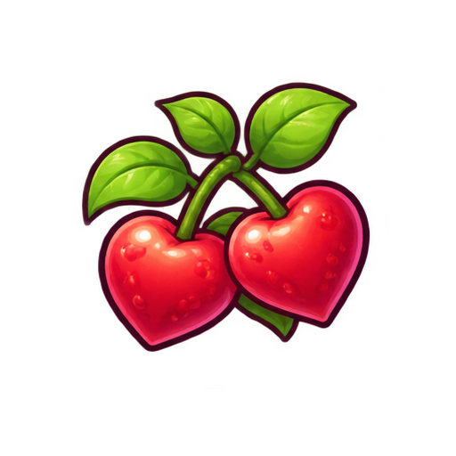
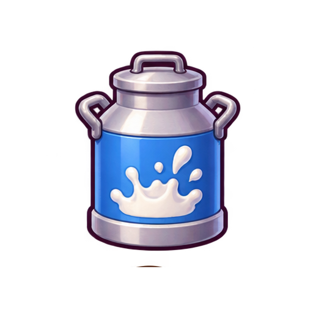
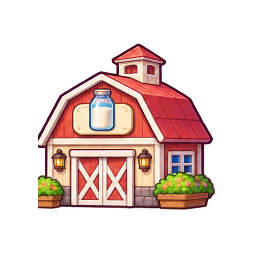

다시 만난, 그때 그 목장
쭉쭉짜유
타이쿤
☰
1개월 · 작은 목장
0 G

사랑의 열매
0
Ⅱ
우유 바로 판매 · 기본 40G/통
착유통 + 저장고 전량 판매 · 저장고 신선도 70% 미만은 32G/통
세 마리로 시작하는 작은 목장
Lv.1 · 천천히 적응하기
우유 한 통에 담는, 작은 행복
착유 도구로 젖소를 눌러 보세요.

저장고로 옮기기
0
착유통
버리기

목장·장비
유제품 공장
애완소
상점가